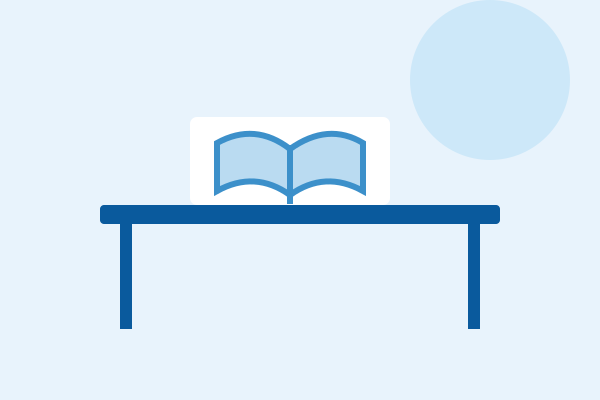
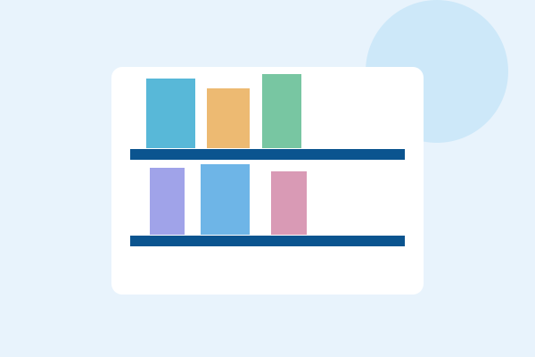

Descubra conteúdos
Veja sugestões de leitura para diferentes áreas de formação.
Um espaço digital pensado para conectar estudantes a livros, conteúdos acadêmicos e oportunidades de aprendizagem.
Explorar livrosUma experiência simples, organizada e acessível, criada para apoiar sua jornada acadêmica.
O objetivo desta interface é apresentar o acervo, as áreas de conhecimento e os serviços da biblioteca com navegação rápida e intuitiva.
Veja sugestões de leitura para diferentes áreas de formação.
Encontre as informações importantes no computador ou celular.
Explore materiais e conheça caminhos para continuar aprendendo.
Conheça seis temas que fazem parte do universo acadêmico.
* Capas e títulos ilustrativos desenvolvidos para o protótipo acadêmico. Não representam um catálogo real nem permitem empréstimos.
Conheça os tipos de espaços e serviços que uma biblioteca universitária pode oferecer.

Locais pensados para concentração, leitura e realização de atividades acadêmicas.

Organização dos materiais por temas para facilitar a busca de referências para trabalhos.
Orientações sobre recursos digitais e maneiras de explorar conteúdos de aprendizagem.
* As descrições são demonstrativas. Confirme endereços, horários e serviços disponíveis nos canais oficiais da UniFECAF.
Para consultar a disponibilidade de materiais e informações atualizadas sobre as unidades, visite os canais oficiais da instituição.
Site oficial UniFECAF